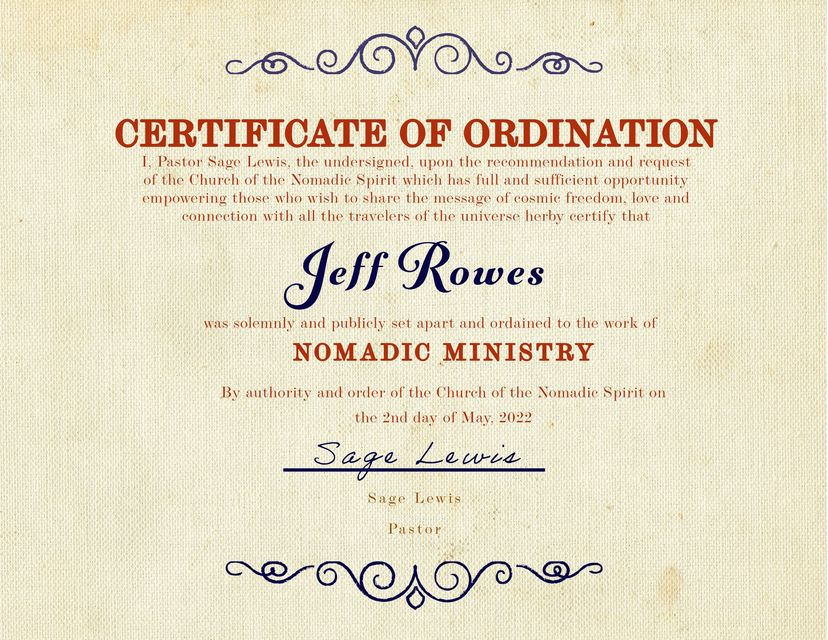

Timeline photos
As Pastor of the Church of the Nomadic Spirit I just ordained our first additional minister. Go forth and share the wisdom of universal travel and connection, Jeff.
(He's going to be doing a wedding this summer and chose our church for his ordination.)